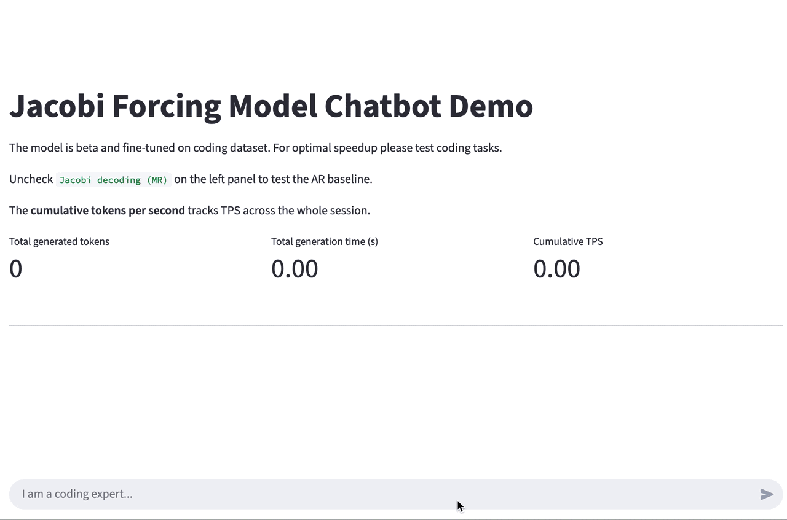
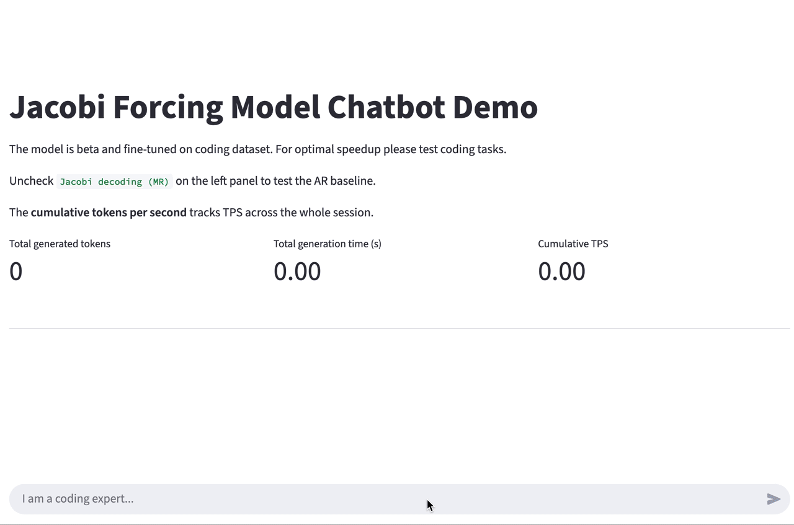
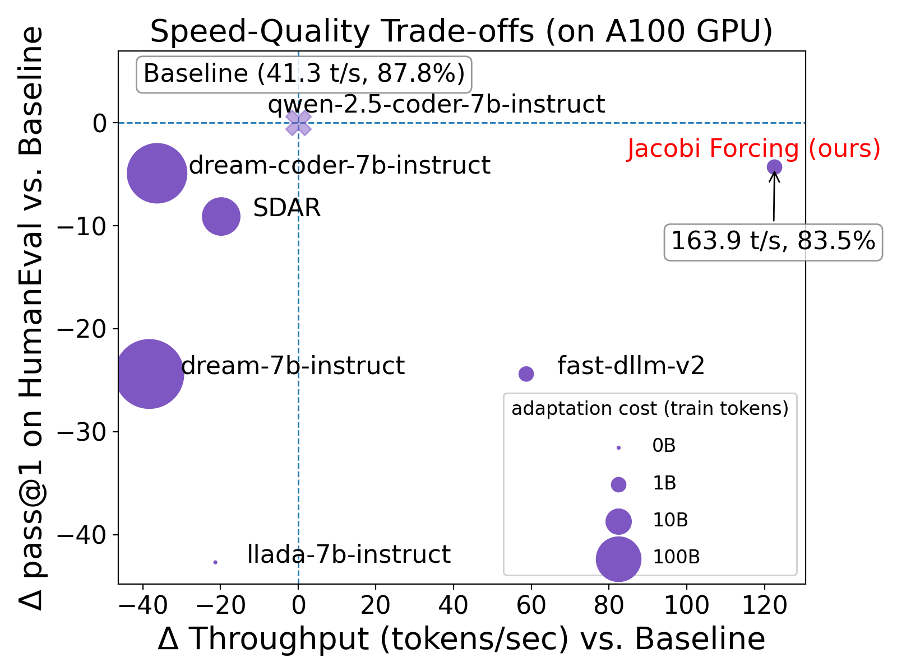
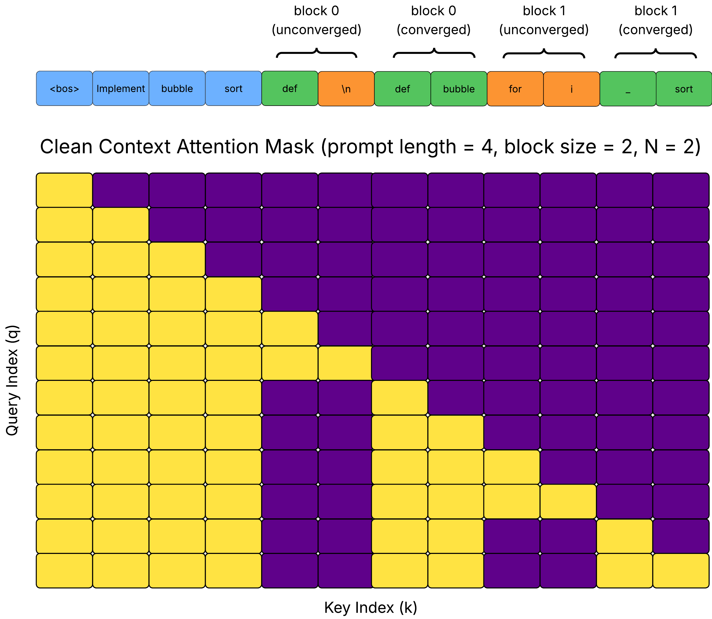
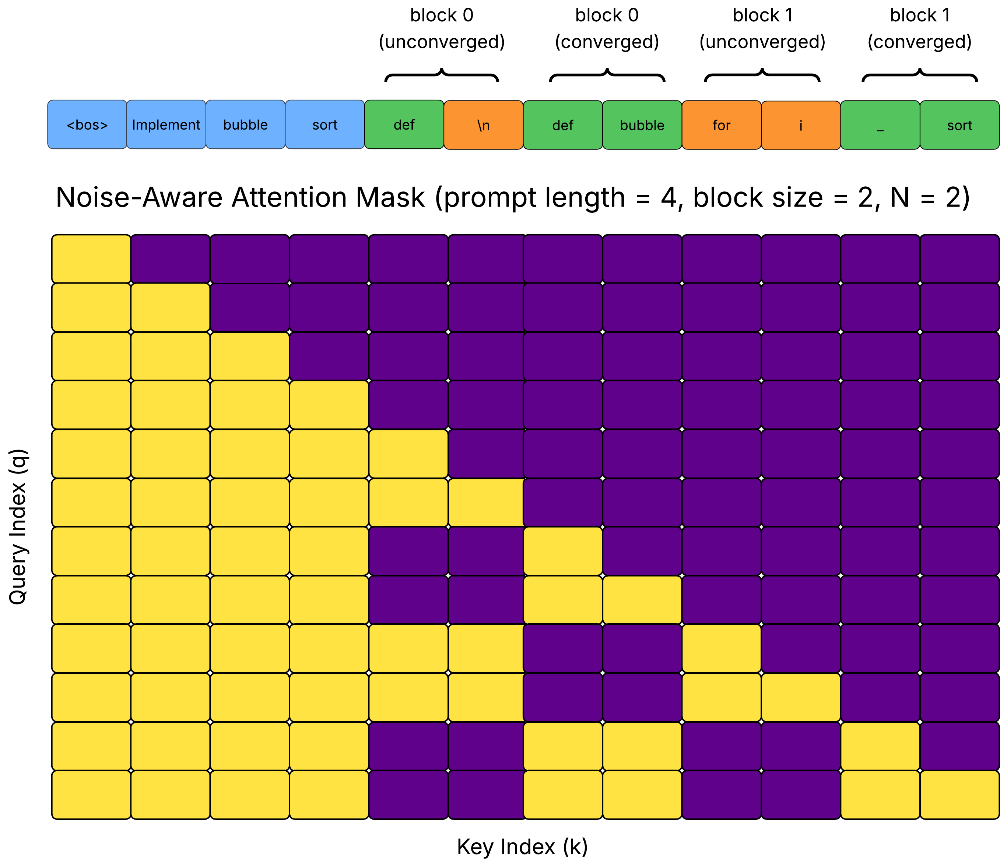
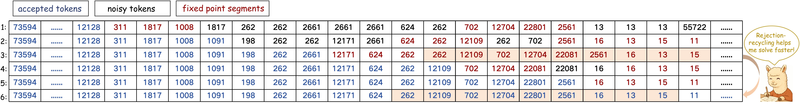
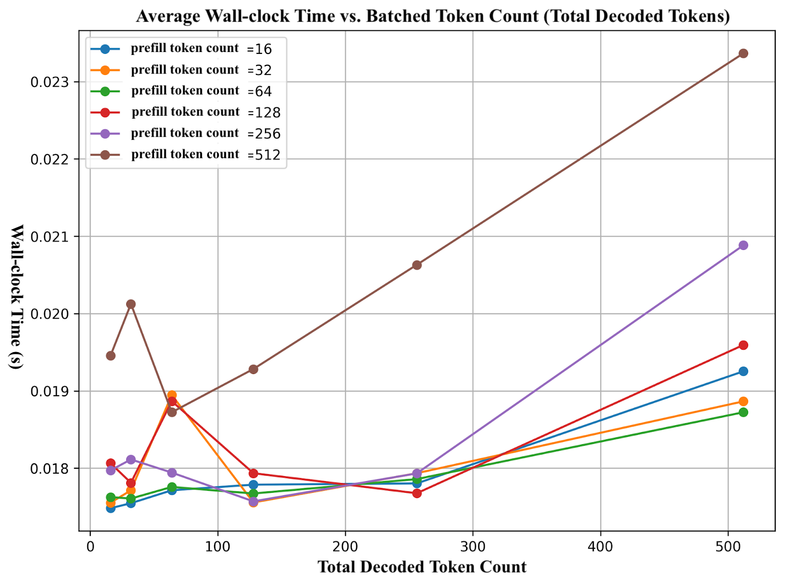
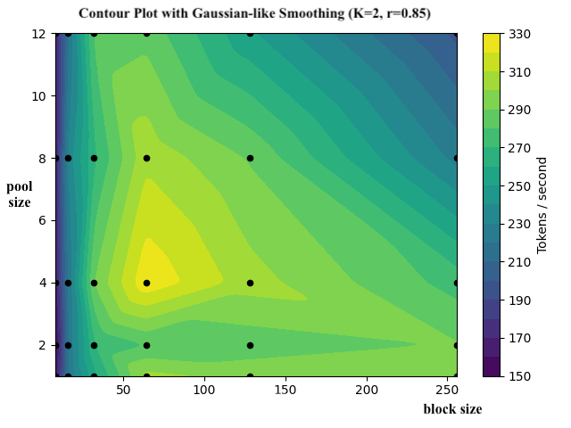

Background
Modern LLM inference has a simple but painful bottleneck: decoding is mostly serial. With autoregressive decoding, each new token depends on all previous ones, so we pay (roughly) one forward pass per token. Most existing work on faster decoding falls into two broad families:
-
Diffusion-style LLMs (dLLMs): use non-causal, often bidirectional attention and denoising objectives to update many tokens in parallel.
-
Speculative decoding (SD): keeps a causal AR backbone but relies on a draft model or extra heads that propose multiple future tokens per verification step.
Table 1 (row 2 and row 3) summarizes their pros and cons. At a high-level, dLLMs offer strong parallelism but demand expensive non-causal post-training and custom infrastructure; SD preserves AR quality but adds FLOPs and system complexity for modest net gains. Let’s dive deeper to discuss their trade-offs.
| Method | Attention | Parallelism | Training Cost | Single-model Decoding (no draft–verifier) | Real Speedup | Generation Quality |
|---|---|---|---|---|---|---|
| AR | Causal | ❌ | 🆓 | ✅ | 🐢 | Lossless |
| SD | Causal | ✅ | 💰 | ❌ | ⚡️⚡️ | Lossless |
| dLLMs | Non-causal | ✅ | 💰💰💰 | ✅ | ⚡️ | Low |
| Jacobi Forcing | Causal | ✅ | 💰 | ✅ | ⚡️⚡️⚡️ | High |
Diffusion LLMs
Diffusion-style dLLMs iteratively denoise entire token blocks with non-causal (often bidirectional) attention. At each step, the model sees a globally noised sequence and tries to predict a cleaner one, updating many positions in parallel. This offers a natural form of parallel decoding, but comes with several trade-offs.
From a modeling perspective, the cleanest way to get a high-quality dLLM would be to pretrain it from scratch with a diffusion-style objective. But at today’s scales, fully training a non-causal dLLM to match a strong AR baseline (where we have invested many GPU hours and infrastructures) is prohibitively expensive, so almost nobody does this in practice. Instead, most recent work starts from a strong AR-pretrained checkpoint and then converts it into a diffusion-style model by oftentimes heavy post-training with a denoising objective. This AR-to-dLLM conversion introduces two kinds of mismatch.
- Training objective mismatch: AR pre-training sees clean, causal prefixes, while diffusion-style post-training sees globally noised sequences and learns to denoise them. The model is now being asked to serve two different goals, and the resulting distribution shift makes it hard to fully recover AR-level quality.
- Attention and infrastructure mismatch: To denoise whole token blocks in parallel, these methods typically switch from causal masking to non-causal attention. That breaks exact KV-cache reuse and many low-level optimizations baked into today’s AR-optimized kernels and serving stacks, and it complicates batching and scheduling in production systems.
In practice, recent dLLMs of this form often require billions to hundreds of billions of additional post-training tokens on top of AR pre-training, and still either lag behind strong AR baselines in accuracy or struggle to turn their theoretical parallelism into proportional wall-clock speedups. See Figure 2 for a quantatitive comparison.

Speculative Decoding
Speculative decoding (SD) keeps the causal AR backbone and its lossless quality, but introduces an additional draft stage. A draft model (or draft head) proposes multiple future tokens. The target model (the main AR backbone) then verifies these proposals and accepts or rejects them in parallel. If drafting were free and most tokens were accepted, SD would give a clean speedup: multiple tokens per verification step without any loss in quality. In reality, SD introduces several major overheads:
- The draft model still consumes FLOPs, memory, and latency. Strong SD methods like EAGLE-3 and HASS achieve impressive speedups, but also involve training the draft models or draft heads and integrating them into the serving stack (see these GitHub issues as examples: SGL-6949, vLLM-9565, vLLM-15025).
- Integrating SD into production serving systems adds engineering complexity: two-model orchestration, heuristics for drafting length, and extra complexity in batching and scheduling.
As a result, end-to-end speedups therefore often plateau at around $2-3\times$ even when the “acceptance length per step” looks impressive in papers.
Table 1 summarizes the trade-offs of all three families discussed above:
- Standard AR decoding: simple, high quality, but strictly serial.
- SD: keeps AR quality but adds draft overhead and system complexity.
- dLLMs: strongly parallel but require expensive non-causal post-training and custom infrastructure, and often lower quality.
Jacobi Forcing
Jacobi forcing builds on top of jacobing decoding, which is a causal parallel decoding procedure that repeatedly updates all tokens in a block in parallel until they match the greedy AR output, tracing a parallel refinement trajectory while preserving the causal attention mechanism. See these papers (1, 2, 3) describing Jacobi decoding in details. Our prior work on CLLMs showed that fine-tuning on Jacobi trajectories can shorten this trajectory and enable faster decoding, but it did not fully exploit hardware constraints or longer-horizon noise.
Jacobi Forcing pushes this idea further: we keep the original causal attention and minimize pre-/post-train mismatch, and train the model so that Jacobi-style decoding produces high-quality drafts that stay close to the AR distribution even under noisy long-horizon context. This is realized via a noise-conditioned training, along with an inference algorithm that exploits high-quality n-grams appearing in the draft. as summarized in Figure 2, Jacobi Forcing turns standard AR models into highly efficient parallel decoders while retaining competitive AR-like quality.
Noise schedule and Training Sequence Preparation
Jacobi Forcing starts by collecting Jacobi trajectories from a base AR model. The key intuition is to treat intermediate Jacobi states as “noisy views” of the final fixed point.
To make this learnable (especially for large blocks), it uses a progressive noise schedule within each packed training sequence:
-
Split the response into blocks and assign each block a target noise level.
-
For each block, pick the Jacobi intermediate state whose “how unconverged it is” best matches that target noise level.
-
Pack blocks so that noise levels cycle from easy to hard, instead of creating long stretches of fully corrupted tokens.
This keeps denoising local and learnable, while still covering a wide range of noise levels inside every sequence (see Video 1).
Noisy-Context Conditioned Training
Jacobi Forcing packs unconverged noisy blocks and their clean fixed-point targets into one long sequence, then use a noise-conditioned causal attention mask so the model can:
-
For each block, distinguish noisy blocks from their fix-point counterparts.
-
Make each noisy block see the prompt and earlier blocks at their assigned noise levels.
-
Expose the clean blocks needed to compute a teacher distribution.
Figure 3 visualizes the attention implementation. The noisy-context mask lets one forward/backward pass cover many noise levels and many blocks at once. Conceptually, the objective has two parts:
-
A progressive consistency distillation term $\mathcal{L}_{\text{pc}}(\theta)$: learn generating higher-quality drafts (by mapping all noisy blocks to clean blocks even when conditioning on noise)
-
An AR term $\mathcal{L}_{\text{AR}}(\theta)$: keep overall quality aligned with the model’s greedy AR behavior
Together, the final objective is therefore:
$$\mathcal{L}(\theta) = \mathcal{L}_{\text{pc}}(\theta) + \lambda \mathcal{L}_{\text{AR}}(\theta) $$where $\lambda > 0$ balances progressive consistency and AR fidelity.


Jacobi Forcing Model Inference
Observation: Jacobi Forcing Model with Higher-quality Drafts
After training, Jacobi Forcing model is still a standard AR checkpoint, but its Jacobi trajectories change qualitatively:
- Intermediate Jacobi states now contain long n-grams in the draft that already match the final greedy AR output. Such n-gram tends to stay correct across iterations, despite their positions might be wrong.
- As a result, we can cache these stable n-grams and reuse them at the right positions in subsequent verification steps for further speedup.

Multiblock decoding and Rejection recycling
To better utilize the GPU, Jacobi Forcing model employs multiblock Jacobi decoding:
- Maintain up to $K$ blocks in flight.
- Mark one block as real-active, whose tokens are verified and committed into the KV cache.
- Treat other blocks as pseudo-active: (i) They are updated under Jacobi iterations using the current prefix. (ii) Their tokens are not committed to the KV cache yet.
- When the real-active block converges, it promotes a pseudo-active block and re-verify all of its tokens under the updated prefix with all tokens converged.
Orthogonally, Jacobi Forcing applies rejection recycling to avoid wasting good drafts (example in Figure 4):
-
Cache promising n-grams from earlier iterations into an n-gram pool (by matching committed suffix).
-
In the next iteration, verify many candidates in parallel (batch dimension) and keep the path with the best TPF (tokens-per-forward).
Hardware-aware Configuration Search
We do not pick Jacobi Forcing model’s inference hyperparameters by trial-and-error alone. Instead, we tune the decoding configuration so that it sits near the compute–memory “knee” of the hardware roofline while still producing high-quality drafts.
In our inference algorithm, the main knobs are:
- Block size $n$ (how many tokens are updated in parallel)
- Number of blocks $K$ (max block count in multiblock decoding)
- Verification budget
pool_size(how many recycled candidates are verified per step) - Activation ratio $r$ (how far a block should converge before we activate additional pseudo-active blocks).
In practice, we fix $r = 0.85$ and $K = 2$: if $r$ is too low or $K$ too high, later blocks are conditioned on overly noisy prefixes and produce overly low-quality drafts.
With $r$ and $K$ fixed, we sweep block size $n$ and pool_size (Figure 5) and pick $n = 64$, pool_size = 4 as the optimal config, also aligning with roofline profiling with around 256 decoded tokens every step.


pool_size usually increase TPF due to higher parallelism. For example, $n = 256$, pool_size = 16 can push TPF higher (e.g., $4.6\times$ vs $4.2\times$ at the config for optimal TPS), but it tends to move past the roofline knee on current hardware, so it consumes a lot more compute for diminishing TPS gains.
Why Jacobi Forcing Works?
In summary, Jacobi Forcing works at two levels:
-
Intra-trajectory (within a block): For each block, we keep the same idea as CLLM: the model is trained so that any intermediate Jacobi state is mapped to the fixed point. And we found training models this way can effectively allow fast forwarding across commonly-used phrases in natural language.
-
Inter-trajectory (across blocks): Across blocks, we introduce a noise schedule where earlier blocks in a window see lighter corruption, later blocks see heavier corruption. This creates a curriculum from “denoise a few tokens” to “denoise many tokens,” making the objective much easier than asking the model to fix a fully corrupted long block in one shot. Empirically, this schedule encourages the model to produce higher-quality drafts even when conditioned on noisy futures.
Our ablation study training models on a 10k subset of data shows that linear progressive noise schedule outperforms both random and reverse progressive schedules, where reverse progressive (putting the heaviest noise first) is clearly harmful, leading to the slowest convergence.
| Strategy | Acc. | iter/token |
|---|---|---|
| Random | 83.5 | 0.53 |
| Linear Progressive | 84.7 | 0.48 |
| Reverse Progressive | 82.3 | 0.62 |
Experiments
Jacobi Forcing is evaluated on:
- Coding benchmarks: HumanEval and MBPP with Qwen2.5-Coder-7B-Instruct.
- Math benchmarks: GSM8K and MATH with Qwen2.5-Math-7B-Instruct.
Compared to dLLM baselines at 7B scale, Jacobi Forcing model offers a much better accuracy–speed trade-off:
- On HumanEval, the strongest diffusion model baseline (D2F) reaches $1.8\times$ speedup with 54.3% accuracy, while Jacobi Forcing model (MR) reaches $4.0\times$ speedup with 82.3% accuracy.
- On GSM8K, D2F yields $2.2\times$ speedup with 77.6% solve rate; Jacobi Forcing model (MR) pushes this to $3.7\times$ speedup at 91.4%.
- Similar trends hold on MBPP and MATH: Jacobi Forcing model matches or exceeds dLLMs’ speed while maintaining substantially higher task accuracy.
Compared to CLLM-style parallel decoders at the ssame 7B scales, Jacobi Forcing model consistently provides ~1.7× higher throughput at similar accuracy, while keeping the pure AR backbone and KV reuse:
- On HumanEval, CLLM achieves $2.5\times$ speedup with 88.0% accuracy, whereas Jacobi Forcing model (MR) achieves $4.0\times$ speedup with 82.3%.
- On GSM8K and MATH, CLLM reaches about $2.1\times$ speedup; Jacobi Forcing model (MR) pushes this to $3.7\times$ with negligible accuracy change.
Detailed Results (on A100, at 7B scale)
| Task | Method | Family | Speedup $\uparrow$ | TPF $\uparrow$ | TPS $\uparrow$ | Acc / Solve $\uparrow$ |
|---|---|---|---|---|---|---|
| HumanEval | AR | AR | $1.00\times$ | 1.0 | 41.3 | 87.8% |
| D2F | dLLM | $1.8\times$ | 2.5 | 73.2 | 54.3% | |
| Fast-dLLM | dLLM | $1.5\times$ | 1.8 | 60.0 | 53.0% | |
| dParallel | dLLM-distilled | $2.1\times$ | 2.9 | 88.5 | 54.3% | |
| EAGLE-3 | SD | $2.9\times$ | 6.4 | 120.7 | 68.9%$^*$ | |
| HASS | SD | $3.4\times$ | 5.5 | 138.7 | 61.6%$^*$ | |
| CLLM$^*$ | causal parallel | $2.5\times$ | 2.7 | 103.3 | 88.0% | |
| Jacobi Forcing model | causal parallel | $3.9\times$ | 4.0 | 159.5 | 83.5% | |
| Jacobi Forcing model (MR) | causal parallel | $4.0\times$ | 4.1 | 163.9 | 83.5% | |
| GSM8K | AR | AR | $1.0\times$ | 1.0 | 41.8 | 92.4% |
| D2F | dLLM | $2.2\times$ | 2.3 | 91.2 | 77.6% | |
| Fast-dLLM | dLLM | $1.2\times$ | 2.1 | 49.8 | 75.0% | |
| dParallel | dLLM-distilled | $3.1\times$ | 3.8 | 128.0 | 82.9% | |
| EAGLE-3 | SD | $3.3\times$ | 7.2 | 138.6 | 63.9%$^*$ | |
| HASS | SD | $3.1\times$ | 5.0 | 128.1 | 74.0%$^*$ | |
| CLLM* | causal parallel | $2.1\times$ | 2.3 | 86.8 | 92.2% | |
| Jacobi Forcing model | causal parallel | $3.5\times$ | 3.7 | 146.1 | 91.4% | |
| Jacobi Forcing model (MR) | causal parallel | $3.7\times$ | 4.0 | 154.9 | 91.4% |
Get started
- GitHub: https://github.com/hao-ai-lab/JacobiForcing
- Huggingface: http://huggingface.co/JacobiForcing
Citation
@misc{hu2025fastaccuratecausalparallel,
title={Fast and Accurate Causal Parallel Decoding using Jacobi Forcing},
author={Lanxiang Hu and Siqi Kou and Yichao Fu and Samyam Rajbhandari and Tajana Rosing and Yuxiong He and Zhijie Deng and Hao Zhang},
year={2025},
eprint={2512.14681},
archivePrefix={arXiv},
primaryClass={cs.CL},
url={https://arxiv.org/abs/2512.14681},
}